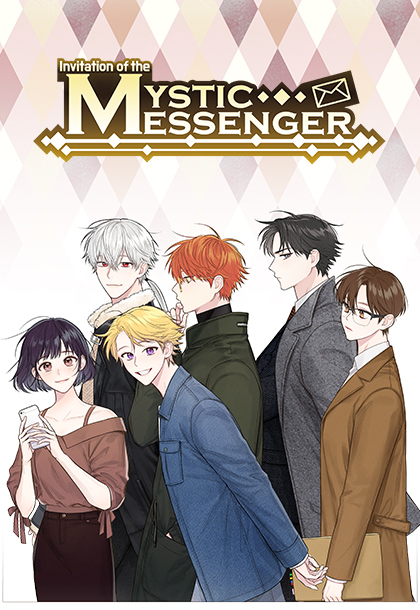

"Mystic Messenger" è un videogioco per cellulare (app) di genere visual novel
realizzato dall'azienda sud coreana Cheritz. Rilasciato il giorno 8 lugio 2016 per Android
e il 18 agosto 2016 per iOS è attualmente disponibile in quattro lingue (inglese, coreano, cinese
e spagnolo) completamente gratis, ma con possibilità di acquistare in-game.
È riuscito ad ottenere un grande successe tra gli amanti del genere sopratutto grazie al suo
innovativo gameplay che unisce narrazione e interazione in modo immersivo grazie all'uso di una
serie di chat e alla complessa struttura narrativa, diventando uno dei visual novel più famosi al mondo.
Questo gli ha permesso di ricevere nel 2017 il premio come miglior Indie Game ai Korea Game Awards.
Oltre all'interazione, cardine del gioco, è disponibile una vasta gamma di contenuti: 7 finali per personaggio,
molte CGs(immagini), chiamate con tanto di audio e un vasto apparato musicale.

Nonostante i precedenti titoli della compagnia abbiano avuto un discreto successo, è indubbio che
Mystic Messenger sia il prodottoche maggiormente ha alimententato la
notorietà dell'azienda, ciò è evidente dal merchandise ormai concentrato in maggioranza su
prodotti "Mystic Messenger", come si può vedere nello
shop, compresi vari "VIP Package" che permettono privilegi speciali all'interno
del gioco.
Data la popolarità della serie, anche a distanza di diversi anni e in occasione del rilascio
di alcuni DLC (contenuti ulteriori a pagamento) il gioco ha anche ottenuto una trasposizione
in fumetto online (webtoon) uscita il 3 aprile del 2020 e tutt'ora in corso. La storia
è pressocchè invariata e segue la storia base del gioco introducendo come personaggio attivo
l'MC che generalmente sarebbe interpretato dal giocatore.